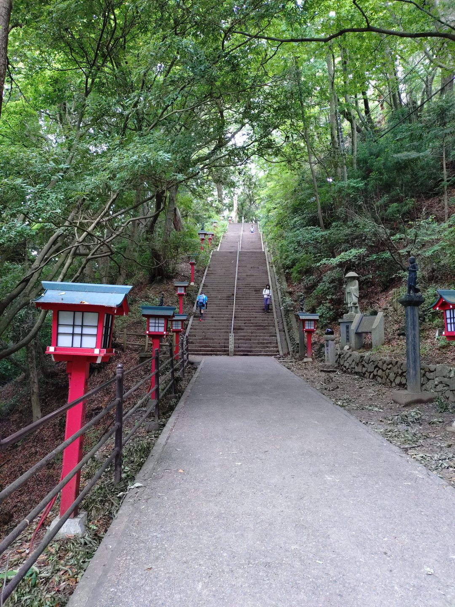
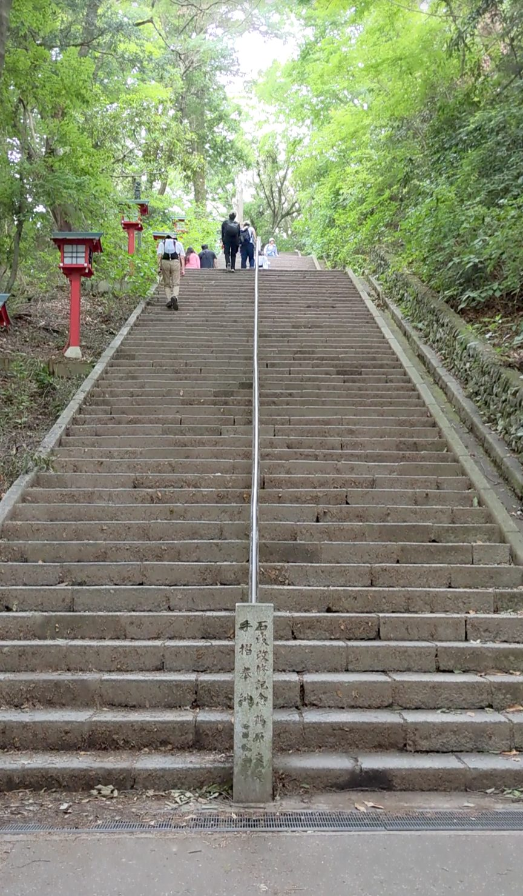
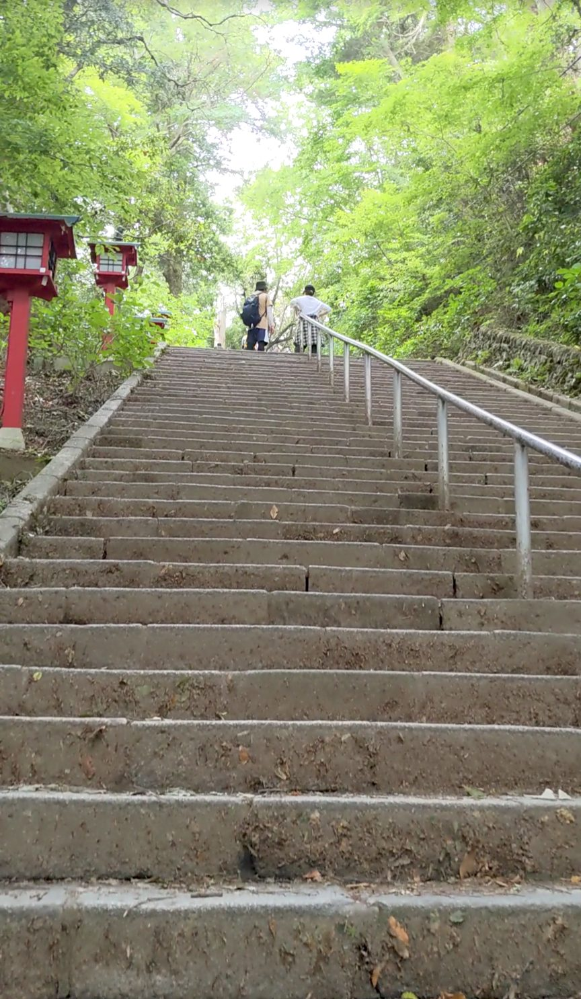
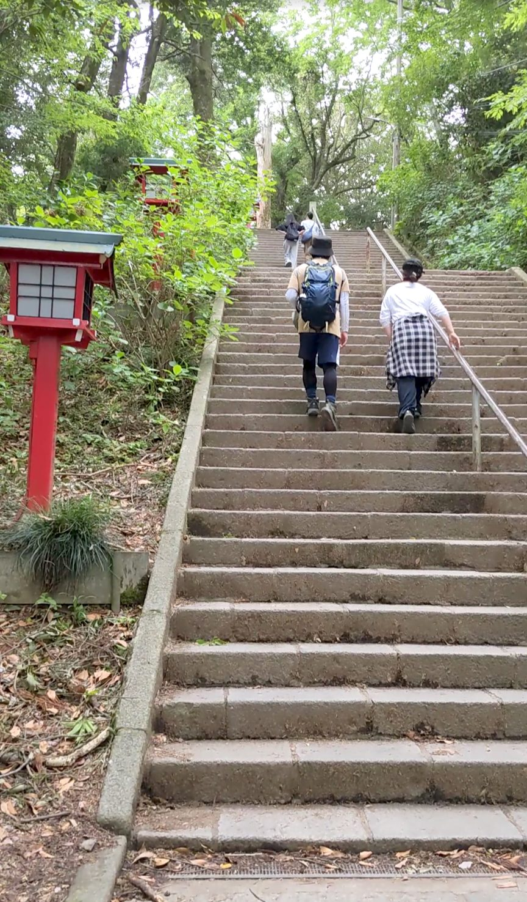
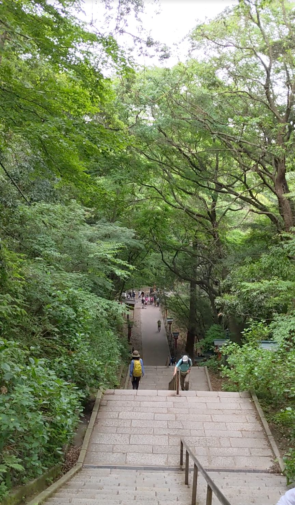

東京都八王子市にある高尾山の「男坂」は、薬王院の境内へと続く108段の石段です。京王高尾線の高尾山口駅から1号路を徒歩で登ると約30分、ケーブルカー（有料）を使えばより早く到着できます。煩悩の数と同じ108という数字、両脇に並ぶ赤い行燈、周囲にそびえる高い木々——さすがは有名な観光地だと感じさせる、スケールも雰囲気も申し分ない石段でした。
京王高尾線「高尾山口駅」下車。1号路を徒歩で登った場合、男坂の入口まで約30分。ケーブルカー（高尾山駅下車）を利用すればより短時間でアクセスできます。男坂は女坂との分岐から入ります。なお、男坂を使わなくても女坂や迂回路から薬王院・山頂へ向かうことができます。
段差はしっかりあり、足元への注意が必要です。登るときは特に上を向いて歩くと開放感が増しますが、足元の確認も忘れずに。体力に自信のない方は女坂や迂回路を利用してください。グリップのある靴、水分補給は必須です。
男坂と女坂の分岐に立つと、男坂はすぐに目に飛び込んできます。遠くからでも「あそこだ」とわかる堂々としたたたずまいで、石段の形が整っていて、両脇に赤い行燈が並び、その奥に木々が高くそびえています。108という煩悩の数と同じ段数も含めて、「さすがは高尾山」という言葉がそのまま出てきました。

近づいてみると、石段の横幅の広さと、周囲の木々の高さが改めて実感できます。幅が広いため窮屈さがなく、木々が天高く伸びているおかげで空間がとても広く感じられます。大勢の人が訪れる観光地でありながら、開放感があるのはこの構造のおかげだと思いました。

登り始めたら、ぜひ上を向いて歩いてみてください。足元も気にしつつ、視線を上に向けると、木々の先に空が広がっていて、とても清々しい気持ちになります。石段を登っているというより、自然の中を進んでいる感覚です。

108段の途中に踊り場があります。ここで一息つくことができます。段差はそれなりにあるので、焦らずマイペースに登りましょう。踊り場から改めて上下を見渡すと、この石段の規模感がよくわかります。

108段を登り切ると、石段の下の方まで一直線に見通すことができます。石畳と赤い行燈がずっと先まで続いていて、ここが寺院の参道なのだということを改めて感じさせます。男坂を使わなくても薬王院や山頂へ向かうことはできますが、体力に自信があればぜひこの石段に挑戦してほしいです。登り切った先からの眺めは、それだけの価値があります。
